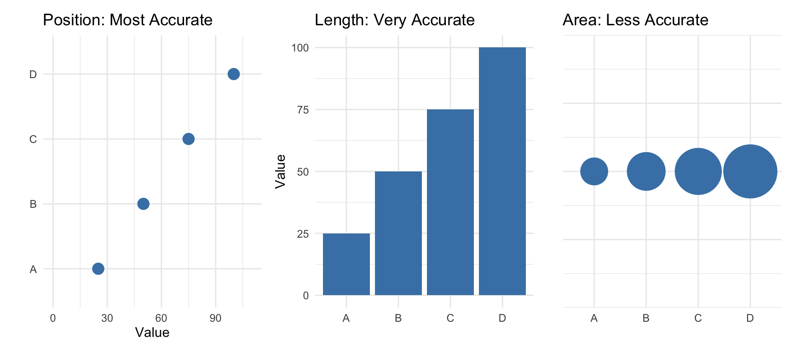
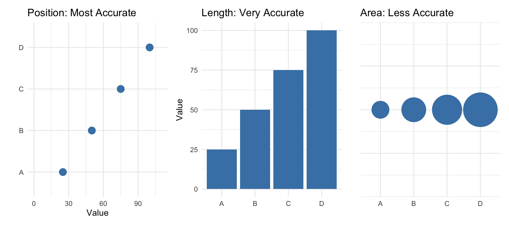
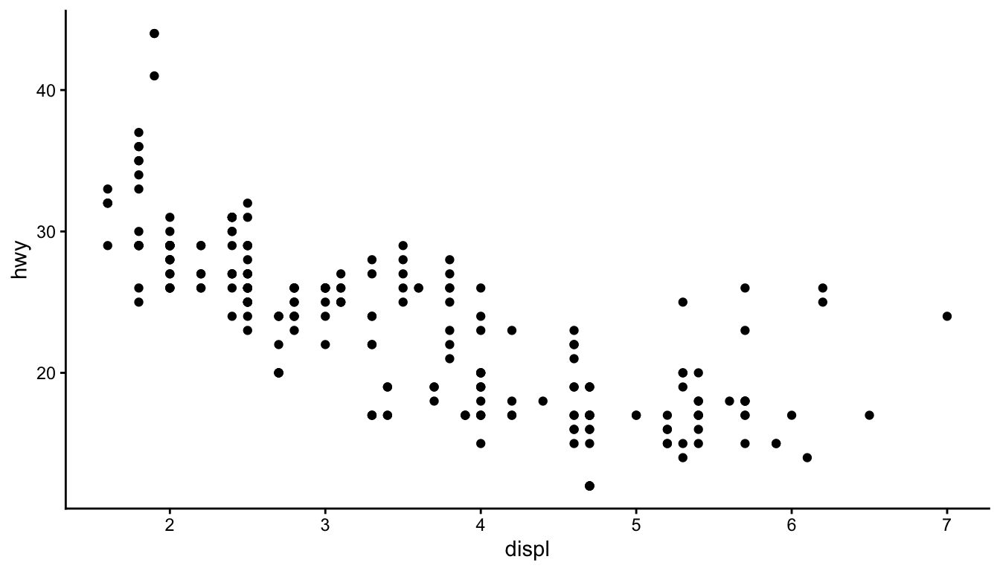
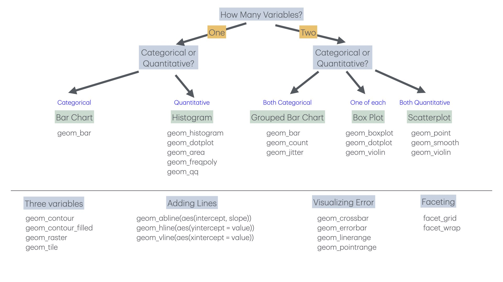

Code
ggplot(data = mpg, mapping = aes(x = displ, y = hwy)) +
geom_point()
Data visualization is both an art and a science. A well-designed graphic can reveal patterns, communicate findings, and guide analysis in ways that tables of numbers cannot. The ggplot2 package implements a coherent system for creating graphics based on Leland Wilkinson’s “Grammar of Graphics”—a framework that describes the fundamental components from which all statistical graphics can be built.
Just as grammar provides rules for constructing sentences from words, the grammar of graphics provides rules for constructing visualizations from components. Every graphic is composed of data, aesthetic mappings that connect variables to visual properties, and geometric objects that represent data points. Additional components like scales, statistical transformations, coordinate systems, and facets allow for sophisticated customizations.

The basic structure of a ggplot2 call begins with the ggplot() function, which creates a coordinate system. You add layers to this foundation using the + operator.
ggplot(data = mpg, mapping = aes(x = displ, y = hwy)) +
geom_point()
This creates a scatterplot of highway fuel efficiency against engine displacement using the built-in mpg dataset. The aes() function establishes the aesthetic mapping—which variables map to which visual properties. Here, displ maps to the x-axis and hwy to the y-axis. The geom_point() function adds a layer of points.
Aesthetics are visual properties of the plot. Beyond position (x and y), common aesthetics include color, size, shape, and transparency (alpha). You can map variables to these aesthetics to encode additional information.
ggplot(mpg, aes(x = displ, y = hwy, color = class)) +
geom_point(size = 3, alpha = 0.7)
Now the color of each point indicates the vehicle class. The legend is created automatically. Note that aesthetics defined inside aes() are mapped to variables, while those defined outside (like size = 3) apply uniformly to all points.
Geometric objects, or geoms, determine what type of plot you create. Different geoms represent data in different ways.
Points are good for showing the relationship between two continuous variables:
ggplot(mpg, aes(x = displ, y = hwy)) +
geom_point()
Lines connect points in order, useful for time series or showing trends:
ggplot(mpg, aes(x = displ, y = hwy)) +
geom_point() +
geom_smooth()
The geom_smooth() function adds a smoothed conditional mean with confidence interval.
Bar charts show counts or summaries of categorical data:
ggplot(diamonds, aes(x = cut)) +
geom_bar()
Use fill to color bars by another variable:
ggplot(diamonds, aes(x = cut, fill = clarity)) +
geom_bar(position = "dodge")
Histograms show the distribution of a continuous variable:
ggplot(diamonds, aes(x = carat)) +
geom_histogram(binwidth = 0.1, fill = "steelblue", color = "white")
Boxplots summarize distributions and highlight outliers:
ggplot(mpg, aes(x = class, y = hwy)) +
geom_boxplot()
You can layer multiple geoms to create richer visualizations:
ggplot(mpg, aes(x = displ, y = hwy)) +
geom_point(aes(color = class)) +
geom_smooth(se = FALSE, color = "black")
Faceting creates small multiples—separate panels for subsets of the data. This is powerful for comparing patterns across groups.
ggplot(mpg, aes(x = displ, y = hwy)) +
geom_point() +
facet_wrap(~ class, nrow = 2)
Use facet_grid() for two-variable faceting:
ggplot(mpg, aes(x = displ, y = hwy)) +
geom_point() +
facet_grid(drv ~ cyl)
Add informative labels with the labs() function:
ggplot(mpg, aes(x = displ, y = hwy, color = class)) +
geom_point() +
geom_smooth(se = FALSE) +
labs(
title = "Fuel Efficiency Decreases with Engine Size",
subtitle = "Data from EPA fuel economy tests",
caption = "Source: fueleconomy.gov",
x = "Engine Displacement (liters)",
y = "Highway Fuel Efficiency (mpg)",
color = "Vehicle Class"
)
Themes control the non-data aspects of the plot—background, grid lines, fonts, etc. ggplot2 includes several built-in themes:
ggplot(mpg, aes(x = displ, y = hwy)) +
geom_point() +
theme_classic()
Other built-in themes include theme_minimal(), theme_bw(), theme_light(), and theme_dark(). The ggthemes package provides many additional themes.
Choosing an appropriate visualization depends on the types of variables you want to display and the message you want to convey.

For one categorical variable, use bar charts. For one continuous variable, use histograms or density plots. For two continuous variables, use scatterplots. For one continuous and one categorical, use boxplots or violin plots. For two categorical variables, use stacked or grouped bar charts or heat maps.
Edward Tufte articulated principles of graphical excellence that remain influential: “Graphical excellence is that which gives to the viewer the greatest number of ideas in the shortest time with the least ink in the smallest space.”
Key principles include:
Show the data. Above all else, make the data visible. Avoid chart junk that obscures what you are trying to communicate.
Encourage comparison. Design graphics to facilitate comparison of different groups or conditions.
Represent magnitudes honestly. The visual representation should be proportional to the numerical quantities being represented. Avoid truncated axes that exaggerate differences.
Minimize clutter. Remove unnecessary grid lines, borders, and decorations. Every element should serve a purpose.
Make displays easy to interpret. Use clear labels, appropriate colors, and logical organization.
Recognizing bad graphics helps you avoid making them.

Ticker-tape style displays make it hard to see patterns. Lines connecting unrelated points mislead. Pie charts make comparisons difficult because humans are poor at judging angles. Three-dimensional effects distort perception without adding information.

Charles Minard’s 1869 map of Napoleon’s Russian campaign is often cited as one of the best statistical graphics ever made. It displays six variables: the size of the army, its location (latitude and longitude), direction of movement, temperature, and date—all in a single coherent image.

The graphic tells a story. You can see the army shrink as it advances, the devastating losses during the retreat, and the correlation with plummeting temperatures. No legend is needed; the meaning is immediately apparent.
Save plots with ggsave():
# Create and save a plot
p <- ggplot(mpg, aes(x = displ, y = hwy)) +
geom_point()
ggsave("my_plot.png", p, width = 8, height = 6, dpi = 300)
ggsave("my_plot.pdf", p, width = 8, height = 6)The function infers the format from the file extension. Specify dimensions and resolution for publication-quality output.
The best way to learn ggplot2 is to use it. Take a dataset you care about and try different visualizations. Experiment with aesthetics, geoms, and facets. Read error messages carefully—they often point directly to the problem. The ggplot2 documentation and the R Graph Gallery (r-graph-gallery.com) provide extensive examples to learn from.